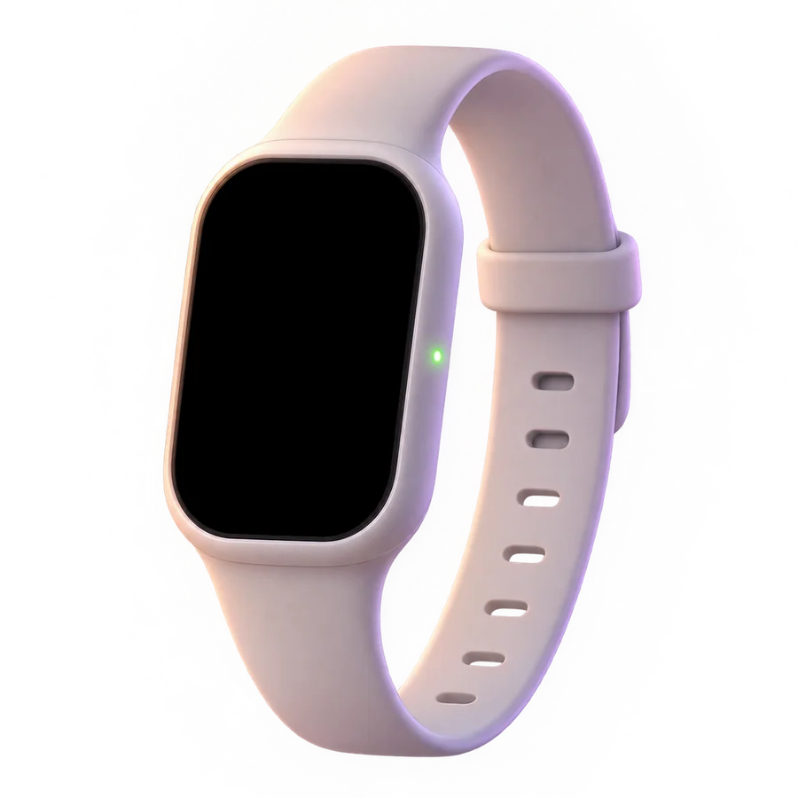
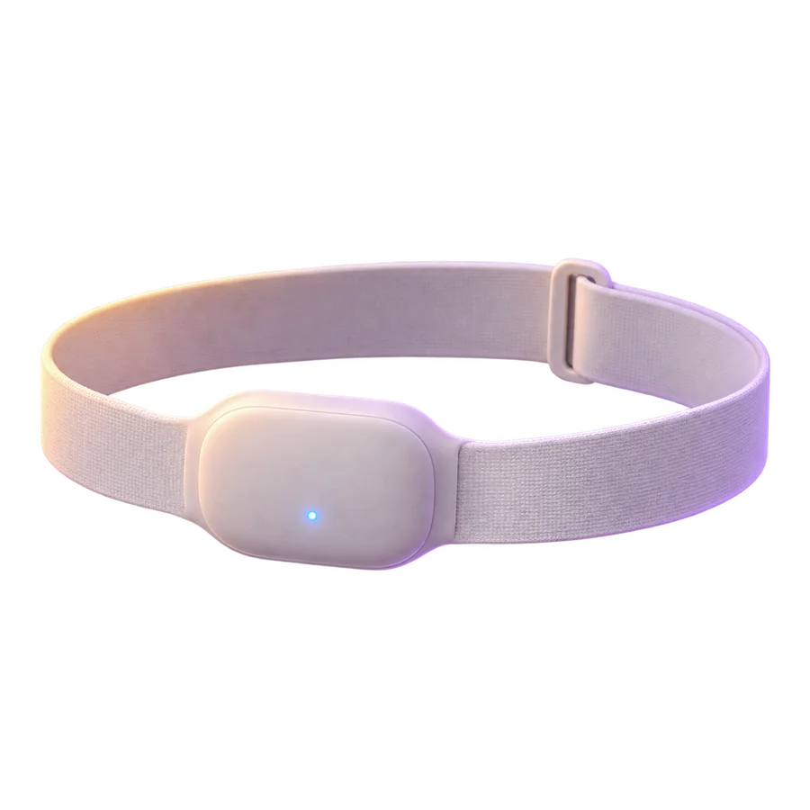
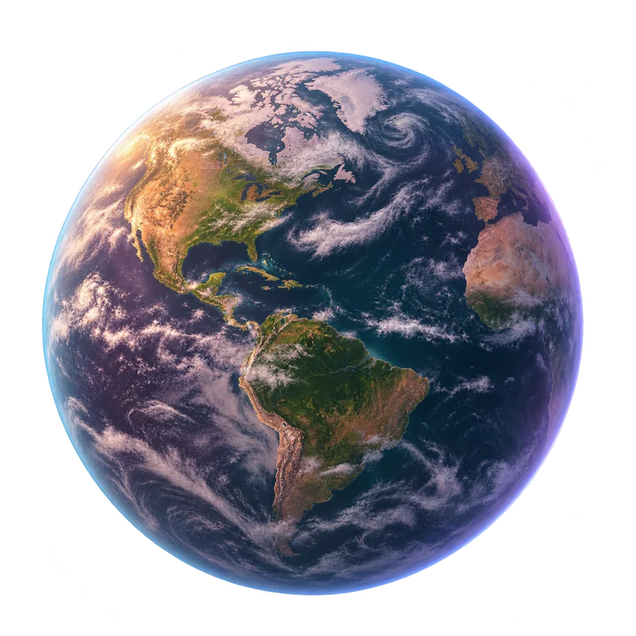
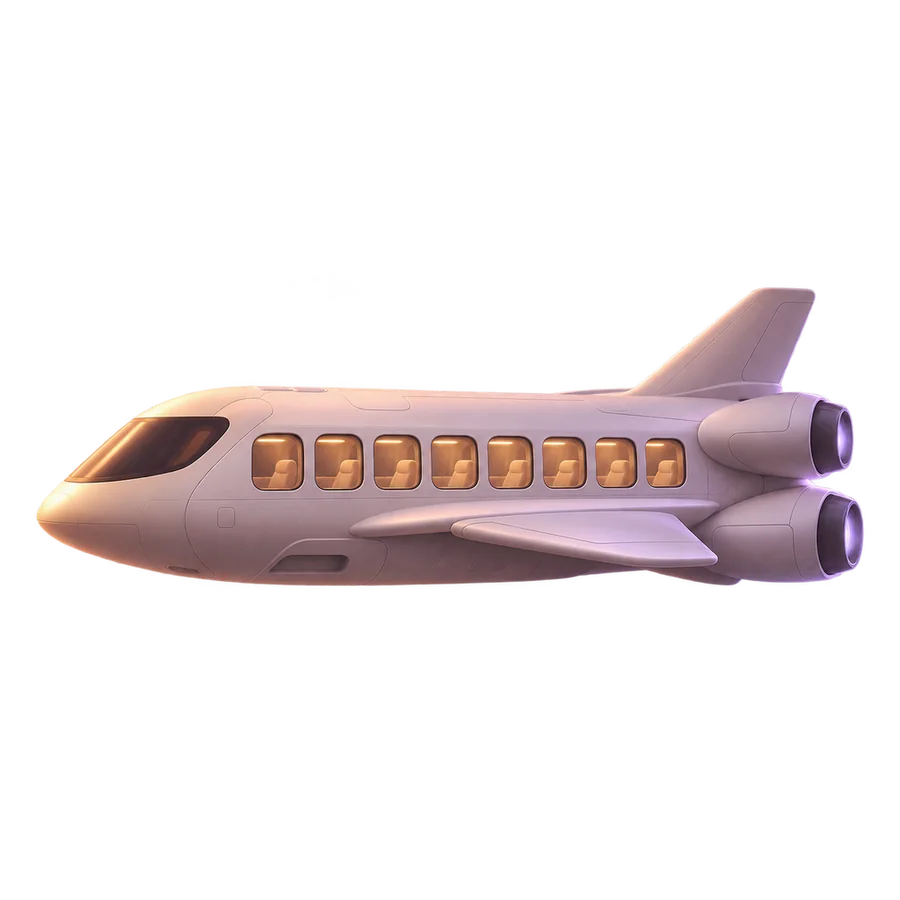
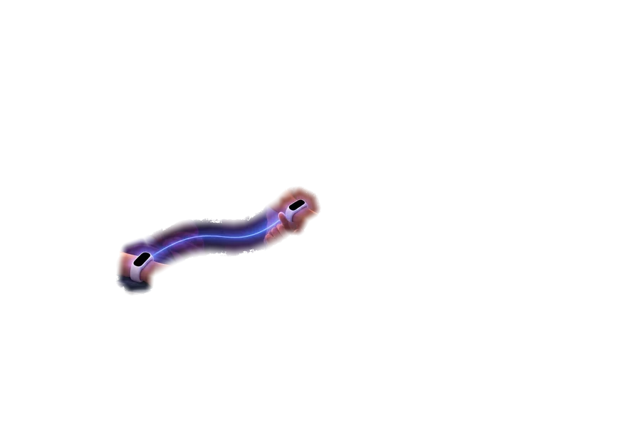

<title>Eva by WearMeds</title>
<meta name="claude:viewport-fit-sides" content="cover">
<link rel="preconnect" href="https://fonts.googleapis.com">
<link rel="preconnect" href="https://fonts.gstatic.com" crossorigin>
<link href="https://fonts.googleapis.com/css2?family=Inter:wght@400&display=swap" rel="stylesheet">
<link rel="stylesheet" href="team-rail.css">
<style>
/* Layout: Two Create type on pure white / pure black. Scroll-scrubbed scenes (our own engine): hero card opens into space, sticky scrollytelling for Case A and B, pinned solar alert, pinned horizontal Earth link, stacking product slabs, team rail, rising wordmark. */
:root{
  --canvas:#ffffff; --ink:#0c0c0c; --rule:#e3e1dd; --muted:rgba(12,12,12,.58);
  --space:#000000; --space-ink:#f4f3f0; --space-muted:rgba(244,243,240,.62); --space-rule:#2a2a2a;
  --alert:#ff6a3d; --link:#7fd4ff; --mark:#ffe36e;
  --font:"PP Neue Montreal","Inter",Arial,sans-serif;
  --t-display:clamp(44px,7.71vw,111px); --t-prop:clamp(30px,4.627vw,66.6px); --t-sec:clamp(24px,3.085vw,44.4px); --t-label:clamp(17px,2.315vw,33.3px); --t-util:clamp(15px,1.543vw,22.2px);
  --ease:cubic-bezier(.645,.045,.355,1);
}
@media (prefers-color-scheme:dark){:root:not([data-theme="light"]){--canvas:#000000;--ink:#f4f3f0;--rule:#2a2a2a;--muted:rgba(244,243,240,.6);--mark:#ffd84a;color-scheme:dark}}
:root[data-theme="dark"]{--canvas:#000000;--ink:#f4f3f0;--rule:#2a2a2a;--muted:rgba(244,243,240,.6);--mark:#ffd84a;color-scheme:dark}
*{box-sizing:border-box}
html{overflow-x:clip}
body{background:var(--canvas);color:var(--ink);font:400 var(--t-util)/1.1 var(--font);-webkit-font-smoothing:antialiased;overflow-x:clip}
h1,h2,h3,p,ul{margin:0;padding:0;font-weight:400}
a{color:inherit;text-decoration:none}
img{display:block}
:focus-visible{outline:2px solid currentColor;outline-offset:4px}
.g{padding-left:max(20px,env(safe-area-inset-left,0px));padding-right:max(20px,env(safe-area-inset-right,0px))}
.prop{font-size:var(--t-prop);line-height:1.02;letter-spacing:-.01em;text-wrap:balance}
.label{font-size:var(--t-label);line-height:1.1;text-transform:uppercase}
.note{font-size:var(--t-util);line-height:1.3;color:var(--muted)}
.ai{position:absolute;right:10px;bottom:8px;font-size:12px;line-height:1;color:rgba(255,255,255,.7);pointer-events:none;z-index:5}
.ai.dk{color:var(--muted)}
.mk{background-image:linear-gradient(var(--mark),var(--mark));background-repeat:no-repeat;background-size:0% 100%;background-position:0 88%;transition:background-size .9s var(--ease);padding:0 .06em}
.in .mk,.mk.in{background-size:100% 100%}
:where(.space) .mk{color:#0c0c0c}

/* Nav */
body::before{content:"";position:fixed;inset:0 0 auto;height:env(safe-area-inset-top,0px);z-index:10;background:var(--canvas)}
.nav{position:sticky;top:env(safe-area-inset-top,0px);z-index:400;height:72px;background:var(--canvas);border-bottom:1px solid var(--rule);display:flex;justify-content:space-between;align-items:center;font-size:var(--t-sec);letter-spacing:-.01em}
.nav a{line-height:1}

/* Ruled header */
.sh{display:flex;justify-content:space-between;align-items:flex-start;gap:20px;border-top:1px solid var(--rule);padding-top:14px;min-height:72px;font-size:var(--t-sec);line-height:1.02;letter-spacing:-.01em}
.space .sh{border-color:var(--space-rule)}

/* R1+R2 hero: the card opens into space */
.hero{position:relative;height:230svh}
.hero .stage{position:sticky;top:72px;height:calc(100svh - 72px);overflow:hidden}
.hero .ground{position:absolute;inset:0;background:var(--space);z-index:2;clip-path:inset(var(--it) var(--ir) var(--ib) var(--il));outline:1px solid var(--space-rule)}
.hero .cabin{position:absolute;inset:0;opacity:calc(var(--s,0)*var(--s,0));transform:scale(calc(1.08 - .08*var(--s,0)))}
.hero .cabin img{width:100%;height:100%;object-fit:cover}
.hero .cabin::after{content:"";position:absolute;inset:0;background:linear-gradient(90deg,rgba(0,0,0,.7),rgba(0,0,0,.15) 60%)}
.hero .copy{position:absolute;z-index:3;left:50%;top:50%;transform:translate(-50%,-50%);width:min(560px,82vw);color:var(--space-ink);display:grid;gap:18px;transition:left .1s}
.hero .copy h1{font-size:clamp(64px,12vw,170px);line-height:.9;letter-spacing:-.03em}
.hero .copy p{font-size:var(--t-sec);line-height:1.05;letter-spacing:-.01em;color:var(--space-muted)}
.hero .copy p b{font-weight:400;color:var(--space-ink)}
.hero .clock{position:absolute;z-index:3;right:20px;bottom:18px;font-size:var(--t-util);color:var(--space-muted);opacity:var(--s,0);font-variant-numeric:tabular-nums}
.chip{position:absolute;z-index:1;width:clamp(90px,12vw,180px);aspect-ratio:1;transform:translate(calc(var(--fx,0px)*var(--k,0)),calc(var(--fy,0px)*var(--k,0))) rotate(calc(var(--turn,0deg)*var(--k,0))) scale(calc(1 - .18*var(--k,0)))}
.chip img{width:100%;height:100%;object-fit:contain;animation:drift 4.8s ease-in-out infinite alternate}
.chip:nth-child(even) img{animation-duration:5.6s;animation-direction:alternate-reverse}
@keyframes drift{from{transform:translateY(-5%)}to{transform:translateY(5%)}}
.chip.load{clip-path:inset(0)}
.hint{position:absolute;z-index:4;left:20px;bottom:18px;font-size:var(--t-util);color:var(--muted);opacity:calc(1 - var(--s,0)*3)}

/* Statement panel (black) */
.space{background:var(--space);color:var(--space-ink)}
.space .note{color:var(--space-muted)}
.statement{position:relative;z-index:5;padding-block:72px 140px}
.statement .big{font-size:var(--t-display);line-height:1.02;letter-spacing:-.01em;max-width:13em;text-wrap:balance}
.statement .row{display:grid;grid-template-columns:repeat(3,1fr);gap:20px;margin-top:96px}
.statement .row p{font-size:var(--t-label);line-height:1.1}
.statement .row small{display:block;font-size:var(--t-util);color:var(--space-muted);margin-top:10px}
@media (max-width:760px){.statement .row{grid-template-columns:1fr;margin-top:56px}}

/* R6 scrollytelling */
.story{display:grid;grid-template-columns:1fr 1.25fr;gap:20px;padding-block:20px 140px}
.story .steps{display:grid}
.story .step{min-height:56svh;border-top:1px solid var(--rule);padding:14px 10px 0;display:flex;flex-direction:column;gap:10px;color:var(--muted);transition:color .5s}
.story .step.on{color:var(--ink)}
.story .step .n{font-size:var(--t-util);font-variant-numeric:tabular-nums}
.story .step h3{font-size:var(--t-sec);line-height:1.05;letter-spacing:-.01em}
.story .step p{font-size:var(--t-util);line-height:1.3;max-width:28em}
.story .panel{position:sticky;top:96px;align-self:start}
.story .frame{position:relative;overflow:hidden;background:var(--space)}
.story .frame img.base{width:100%;height:auto}
.story .hl{position:absolute;left:0;top:0;width:100px;height:100px;border:2px solid var(--mark);box-shadow:0 0 0 9999px rgba(0,0,0,.38);transform:translate(var(--hx,0),var(--hy,0));width:var(--hw,0);height:var(--hh,0);opacity:var(--ho,0);transition:transform .6s cubic-bezier(.76,0,.24,1),width .6s cubic-bezier(.76,0,.24,1),height .6s cubic-bezier(.76,0,.24,1),opacity .4s}
.story .link{position:absolute;inset:0;width:100%;height:100%;object-fit:cover;opacity:0;transition:opacity 1s;mix-blend-mode:screen}
.story .frame.linked .link{opacity:1}
.cap{margin-top:12px;font-size:var(--t-util);color:var(--muted)}
@media (max-width:900px){.story{grid-template-columns:1fr}.story .panel{top:80px;order:-1;z-index:3;background:var(--canvas);padding-bottom:10px}.story .step{min-height:46svh}}

/* Case B: wristband UI + harness light */
.dev{display:grid;grid-template-columns:1fr 1fr;gap:10px;background:transparent}
.dev .w,.dev .h{position:relative;aspect-ratio:1}
.dev img{width:100%;height:100%;object-fit:contain}
.dev .scr{position:absolute;left:23.5%;top:22%;width:28.5%;height:43.5%;transform:rotate(-2.5deg);border-radius:12% / 8%;display:flex;flex-direction:column;justify-content:center;gap:.5em;padding:0 8%;color:#fff;font-size:clamp(7px,.78vw,12px);line-height:1.15}
.dev .scr small{font-size:.62em;letter-spacing:.08em;text-transform:uppercase;color:#7fd4ff}
.dev .scr span{transition:opacity .35s}
.dev .scr .dots{display:flex;gap:4px}.dev .scr .dots i{width:9px;height:2px;background:rgba(255,255,255,.3)}.dev .scr .dots i.on{background:#fff}
.dev .glow{position:absolute;left:30%;top:47%;width:16%;aspect-ratio:1;border-radius:50%;background:radial-gradient(circle,rgba(255,214,110,.95),rgba(255,180,60,.45) 40%,transparent 70%);opacity:0;transform:scale(.6);transition:opacity .6s,transform .6s}
.dev .h.lit .glow{opacity:1;transform:scale(1);animation:pulse 2s ease-in-out infinite}
@keyframes pulse{50%{transform:scale(1.15)}}
.dev .tag{position:absolute;left:10px;top:8px;font-size:12px;color:var(--muted)}

/* Pinned solar alert */
.solar{position:relative;height:280svh}
.solar .stage{position:sticky;top:72px;height:calc(100svh - 72px);overflow:hidden;background:var(--space)}
.solar .sun{position:absolute;right:-6%;top:6%;width:min(62vh,46vw);transform:translateX(calc(40% - 40%*var(--a,0))) scale(calc(.6 + .4*var(--a,0)));opacity:calc(.2 + .8*var(--a,0))}
.solar .sun img{width:100%;animation:spin 90s linear infinite}
@keyframes spin{to{transform:rotate(360deg)}}
.solar .flare{position:absolute;right:20%;top:24%;width:min(30vh,22vw);aspect-ratio:1;border-radius:50%;background:radial-gradient(circle,rgba(255,240,200,.95),rgba(255,140,60,.5) 35%,transparent 70%);transform:scale(calc(var(--b,0)*1.4));opacity:calc(var(--b,0)*(1 - var(--c,0)*.6));mix-blend-mode:screen}
.solar canvas{position:absolute;inset:0;width:100%;height:100%}
.solar .ship{position:absolute;left:4%;bottom:5%;width:min(30vw,420px);z-index:1}
.solar .ship img{width:100%}
.solar .ship::after{content:"";position:absolute;inset:10% 0;background:radial-gradient(60% 50% at 70% 50%,rgba(255,80,40,.55),transparent 70%);opacity:var(--d,0);mix-blend-mode:screen}
.solar .txt{position:absolute;z-index:3;left:20px;top:28px;max-width:min(560px,80vw);display:grid;gap:12px;color:var(--space-ink)}
.solar .txt .note{max-width:30em;color:var(--space-muted)}
.solar .alert{color:var(--space-ink);position:absolute;z-index:3;right:20px;bottom:24px;width:min(340px,80vw);background:#000;border:1px solid #333;padding:18px;display:grid;gap:6px;transform:translateY(calc(60px - 60px*var(--d,0)));opacity:var(--d,0)}
.solar .alert small{font-size:13px;letter-spacing:.08em;color:var(--alert)}
.solar .alert b{font-weight:400;font-size:var(--t-sec);line-height:1}
.solar .alert span{font-size:15px;color:var(--space-muted)}
.solar .meter{position:absolute;z-index:3;left:auto;right:380px;bottom:24px;font-size:var(--t-util);color:var(--space-muted);font-variant-numeric:tabular-nums}

/* Pinned horizontal Earth link (R5) */
.link-sec{position:relative}
.link-sec .pin{position:sticky;top:72px;height:calc(100svh - 72px);overflow:hidden;background:var(--space);color:var(--space-ink)}
.link-sec .head{position:absolute;left:20px;top:28px;right:20px;display:flex;justify-content:space-between;gap:20px;z-index:3}
.link-sec .lt{font-size:var(--t-sec);font-variant-numeric:tabular-nums;color:var(--space-ink);text-align:right}
.link-sec .lt small{display:block;font-size:var(--t-util);color:var(--space-muted)}
.link-sec .track{position:absolute;left:0;top:0;height:100%;display:flex;align-items:center;gap:6vw;padding:0 52vw 0 8vw;transform:translateX(calc(var(--x,0)*-1px));will-change:transform}
.link-sec .planet{flex:none;width:min(48vh,40vw)}
.link-sec .planet img{width:100%}
.link-sec .packet{flex:none;display:grid;gap:6px;width:220px;border-top:1px solid var(--space-rule);padding-top:10px;position:relative}
.link-sec .packet b{font-weight:400;font-size:var(--t-label)}
.link-sec .packet span{font-size:15px;color:var(--space-muted)}
.link-sec .packet::before{content:"";position:absolute;left:0;top:-1px;height:2px;width:100%;background:var(--link);transform-origin:left;transform:scaleX(var(--f,0))}
.link-sec .dash{flex:none;width:12vw;border-top:2px dotted rgba(255,255,255,.35)}
.link-sec .playhead{position:absolute;left:50%;top:18%;bottom:12%;width:2px;background:var(--link);z-index:2}
.link-sec .playhead::after{content:"now";position:absolute;top:-24px;left:8px;font-size:13px;color:var(--link)}

/* Editorial */
.ed{display:grid;grid-template-columns:1fr 1fr;gap:20px;padding-block:20px 140px}
.ed .prop{padding:0 10px}
.ed .body{font-size:var(--t-label);line-height:1.12;padding:0 10px;display:grid;gap:36px;min-width:0}
@media (max-width:760px){.ed{grid-template-columns:1fr;gap:36px}}

/* R3 stacking slabs */
.slabs{position:relative}
.slab{position:sticky;top:72px;min-height:calc(100svh - 72px);display:grid;grid-template-columns:1fr 1fr;gap:20px;align-items:center;transform-origin:50% 0;transform:scale(calc(1 - .1*var(--p,0)));filter:brightness(calc(1 - .45*var(--p,0)))}
.slab.light{background:var(--canvas);color:var(--ink);border-top:1px solid var(--rule)}
.slab.dark{background:var(--space);color:var(--space-ink)}
.slab .name{font-size:var(--t-display);line-height:1;letter-spacing:-.02em;padding:0 10px}
.slab .specs{display:grid;gap:0;margin-top:28px;padding:0 10px;font-size:var(--t-util)}
.slab .specs div{display:flex;justify-content:space-between;gap:20px;padding:12px 0;border-top:1px solid var(--rule)}
.slab.dark .specs div{border-color:var(--space-rule)}
.slab .specs span{color:var(--muted)}.slab.dark .specs span{color:var(--space-muted)}
.slab .pic{position:relative;aspect-ratio:1;max-height:76svh;justify-self:center;width:100%}
.slab .pic img{width:100%;height:100%;object-fit:contain;transform:scale(calc(1.15 - .15*var(--r,1)))}
.slab .dots{position:absolute;inset:0;pointer-events:none;background-image:radial-gradient(circle,var(--dot) var(--rr,0px),transparent calc(var(--rr,0px) + .7px));background-size:var(--cell,6px) var(--cell,6px)}
.slab.light .dots{--dot:var(--canvas)}.slab.dark .dots{--dot:#000}
.slab .pending{font-size:13px;color:var(--muted);padding:0 10px;margin-top:14px}
@media (max-width:900px){.slab{position:relative;top:auto;grid-template-columns:1fr;padding-block:48px;transform:none;filter:none}}

/* Team */
.team-sec{padding-block:20px 120px}

/* Close + wordmark */
.close{padding-block:0 140px;display:grid;gap:36px}
.close p{font-size:var(--t-sec);line-height:1.02;letter-spacing:-.01em;max-width:16em}
.close ul{list-style:none;display:grid;gap:6px}
.close a{font-size:var(--t-sec);line-height:1.02;letter-spacing:-.01em;display:inline-flex;gap:.3em;transition:padding-left .3s}
.close a:hover{padding-left:10px}
.close a svg{width:.9em;height:.9em;flex:none;margin-top:.08em}
.foot{padding-bottom:20px;overflow:hidden}
.notice{font-size:var(--t-util);line-height:1.3;color:var(--muted);max-width:52em;padding-block:0 40px}
.mark{border-top:1px solid var(--rule);border-bottom:1px solid var(--rule);padding-block:20px;overflow:hidden}
.mark svg{display:block;width:100%;height:auto;transform-origin:0 100%;transform:translateY(calc(35% - 35%*var(--w,1))) scale(calc(1.08 - .08*var(--w,1)))}
.util{display:flex;justify-content:space-between;gap:20px;flex-wrap:wrap;padding-top:14px}
.util ul{list-style:none;display:flex;gap:15px}
.u{background-image:linear-gradient(currentColor,currentColor);background-size:0 1px;background-position:0 100%;background-repeat:no-repeat;transition:background-size .45s var(--ease)}
.u:hover,.u:focus-visible{background-size:100% 1px}

/* Reveal primitives (R8): start visible-ish, never hidden */
[data-reveal]{transition:opacity .9s var(--ease),transform .9s var(--ease)}
[data-reveal].pre{opacity:.3;transform:translateY(28px)}
.rule-draw{transform-origin:left;transform:scaleX(.2);transition:transform 1.1s var(--ease)}
.rule-draw.in{transform:scaleX(1)}

@media (prefers-reduced-motion:reduce){
  .hero{height:auto}.hero .stage{position:relative;height:80svh}.hero .ground{clip-path:none}.hero .cabin{opacity:1;transform:none}.chip{display:none}.hint{display:none}
  .solar{height:auto}.solar .stage{position:relative;height:90svh}
  .chip img,.solar .sun img,.dev .h.lit .glow{animation:none}
  [data-reveal].pre{opacity:1;transform:none}
  .slab{position:relative;top:auto;transform:none;filter:none}
}
</style>

<nav class="nav g" aria-label="Main"><a href="#top">Eva</a><a href="#contact">Contact</a></nav>

<main id="top">
  <!-- 1 · Hero -->
  <section class="hero" id="hero" aria-label="Eva">
    <div class="stage">
      <div class="chips" aria-hidden="true">
        <div class="chip" style="left:6%;top:10%"></div>
        <div class="chip" style="left:16%;top:62%"></div>
        <div class="chip" style="right:7%;top:8%"></div>
        <div class="chip" style="right:14%;top:60%"></div>
        <div class="chip" style="left:40%;top:-2%"></div>
        <div class="chip" style="left:44%;bottom:-4%"></div>
      </div>
      <div class="ground" id="ground">
        <div class="cabin"><span class="ai">AI-generated</span></div>
      </div>
      <div class="copy"><h1>Eva</h1><p>Care that <b>guides</b>, <b>records</b> and <b>warns</b> on the way to Mars.</p></div>
      <div class="clock" id="clock">Mission day 212 · Earth 14 min away</div>
      <div class="hint">Scroll</div>
    </div>
  </section>

  <!-- 2 · Statement -->
  <section class="space statement g" aria-labelledby="st">
    <p class="big" id="st" data-reveal>Fifteen passengers. <span class="mk">No doctor</span> on board. Earth up to <span class="mk">22 minutes</span> away.</p>
    <div class="row">
      <p data-reveal>Wristband<small>Large flexible touch screen, alerts, voice and the help button.</small></p>
      <p data-reveal>Chest harness<small>Contact sensors, plus room for validated emergency modules.</small></p>
      <p data-reveal>Ship hub<small>Runs Eva offline. No internet, no Earth needed.</small></p>
    </div>
  </section>

  <!-- 3 · Case A -->
  <section class="g" aria-labelledby="ca">
    <div class="sh"><h2 id="ca">Case A · Cannot act</h2></div>
    <div class="story" id="storyA">
      <div class="steps">
        <div class="step" data-box="0,13,39,87"><span class="n">01</span><h3>The harness and wristband notice a fall and no response</h3><p>Eva cross-checks independent signals before it calls anyone. Stillness alone is not an emergency.</p></div>
        <div class="step" data-box="43,44,6,9"><span class="n">02</span><h3>Eva calls the nearest passenger</h3><p>Their wristband shows where to go. If they do not confirm in 20 seconds, Eva calls the next one.</p></div>
        <div class="step" data-box="22,48,24,14" data-link="1"><span class="n">03</span><h3>One instruction at a time</h3><p>The helper follows big pictures, voice and short text on their own wrist, linked to the patient's devices.</p></div>
        <div class="step" data-box="0,0,100,100" data-link="1"><span class="n">04</span><h3>Everyone else gets a quiet notice</h3><p>Every step, reading and decision goes into the log for the ship and for Earth.</p></div>
      </div>
      <div class="panel"><div class="frame" id="frameA"><div class="hl" id="hlA"></div><span class="ai">AI-generated</span></div><p class="cap">Concept art. The harness replaces the chest band shown here.</p></div>
    </div>
  </section>

  <!-- 4 · Case B -->
  <section class="g" aria-labelledby="cb">
    <div class="sh"><h2 id="cb">Case B · Can act</h2></div>
    <div class="story" id="storyB">
      <div class="steps">
        <div class="step" data-ui="0"><span class="n">01</span><h3>Eva checks you can move and follow steps</h3><p>Being awake is not the same as being able to help yourself.</p></div>
        <div class="step" data-ui="1" data-lit="1"><span class="n">02</span><h3>The harness lights the item you need</h3><p>The wristband shows one action; a light on the harness points to the right pocket.</p></div>
        <div class="step" data-ui="2" data-lit="1"><span class="n">03</span><h3>Step by step, with voice and vibration</h3><p>Repeat and Get help stay on screen the whole time.</p></div>
        <div class="step" data-ui="3"><span class="n">04</span><h3>If you can't, a passenger takes over</h3><p>Eva switches to Case A and calls the nearest helper.</p></div>
      </div>
      <div class="panel">
        <div class="dev">
          <div class="w"><div class="scr" aria-live="polite"><small id="uiK">Eva · Step 1 of 3</small><span id="uiT">Can you sit up? Tap Yes</span><div class="dots" id="uiD"><i class="on"></i><i></i><i></i></div></div><span class="ai dk">AI-generated</span></div>
          <div class="h" id="harness"><div class="glow"></div><span class="tag">Harness (render pending)</span><span class="ai dk">AI-generated</span></div>
        </div>
      </div>
    </div>
  </section>

  <!-- 5 · Solar alert -->
  <section class="solar" id="solar" aria-labelledby="sa">
    <div class="stage">
      <div class="sun"></div>
      <div class="flare" aria-hidden="true"></div>
      <canvas id="particles" aria-hidden="true"></canvas>
      <div class="ship"></div>
      <div class="txt"><p class="label" id="sa">Solar alert</p><h2 class="prop">Minutes of warning before the particles arrive</h2><p class="note">Eva reads NASA DONKI flare reports and NOAA GOES proton data. X-rays arrive with the light; the particles that follow leave time to reach the shelter.</p></div>
      <div class="meter" id="meter">Proton flux · 2 pfu</div>
      <div class="alert" role="status"><small>SOLAR ALERT</small><b>Go to the shelter</b><span>Particles arrive in about 18 min. Your wristband shows the way.</span></div>
      <span class="ai">AI-generated</span>
    </div>
  </section>

  <!-- 6 · Earth link -->
  <section class="link-sec" id="linkSec" aria-labelledby="el">
    <div class="pin">
      <div class="head"><div><p class="label" id="el">Earth link</p><h2 class="prop" style="max-width:12em">Every step recorded, even minutes from Earth</h2></div><p class="lt" id="lt">3 min<small>one-way light time</small></p></div>
      <div class="playhead" aria-hidden="true"></div>
      <div class="track" id="track">
        <div class="planet"></div>
        <div class="dash"></div>
        <div class="packet"><b>12:01:04</b><span>Fall detected · passenger 07</span></div>
        <div class="packet"><b>12:01:05</b><span>Helper assigned · passenger 03</span></div>
        <div class="packet"><b>ECG strip</b><span>Signed, chained, queued</span></div>
        <div class="packet"><b>Step 2 done</b><span>Breathing checked</span></div>
        <div class="packet"><b>ACK</b><span>Received on Earth</span></div>
        <div class="dash"></div>
        <div class="planet"></div>
      </div>
      <span class="ai">AI-generated</span>
    </div>
  </section>

  <!-- 7 · Why it matters -->
  <section class="g" aria-labelledby="why">
    <div class="sh"><h2 id="why">Why it matters</h2></div>
    <div class="ed" data-reveal>
      <p class="prop">Care that does not wait for a doctor</p>
      <div class="body">
        <p>Around 70% of astronauts on six-to-twelve-month missions aboard the ISS show significant vision changes, and 85% of 71 astronauts reported at least one nasal or sinus problem. On a commercial flight to Mars most passengers will not be clinicians, and Earth may be twenty minutes away by radio.</p>
        <p>We built Eva on NASA's open Inspiration4 data (OSDR OSD-575 and OSD-569). Against each crew member's own baseline, the metabolic panel the day after landing showed 16 of 72 changes, against 7 with standard laboratory ranges.</p>
        <p>Eva guides, records and warns. Shocks and injections belong to validated subsystems, never to a chat model.</p>
      </div>
    </div>
  </section>

  <!-- 8 · WearMeds slabs -->
  <section aria-labelledby="kit">
    <div class="g"><div class="sh"><h2 id="kit">WearMeds</h2></div></div>
    <div class="slabs" id="slabs">
      <article class="slab light g">
        <div><p class="name">Wristband</p>
          <div class="specs"><div>Screen<span>Flexible touch, ≥100 mm active side</span></div><div>Talks to<span>Ship hub over LoRa</span></div><div>Always on<span>Help button, voice, vibration</span></div></div></div>
        <div class="pic"><div class="dots"></div><span class="ai dk">AI-generated</span></div>
      </article>
      <article class="slab dark g">
        <div><p class="name">Harness</p>
          <div class="specs"><div>Sensors<span>Contact, non-invasive</span></div><div>Modules<span>Defibrillation, emergency injectable</span></div><div>Guides<span>Lights the item to use</span></div></div>
          <p class="pending">Stand-in image until the harness renders arrive.</p></div>
        <div class="pic"><div class="dots"></div><span class="ai">AI-generated</span></div>
      </article>
      <article class="slab light g">
        <div><p class="name">Ship hub</p>
          <div class="specs"><div>Runs<span>Eva's medical AI, offline</span></div><div>Keeps<span>The signed log of every step</span></div><div>Sends<span>Queued reports to Earth</span></div></div></div>
        <div class="pic"><div class="dots"></div><span class="ai dk">AI-generated</span></div>
      </article>
    </div>
  </section>

  <!-- 9 · Business -->
  <section class="g" aria-labelledby="model" style="margin-top:96px">
    <div class="sh"><h2 id="model">Business</h2></div>
    <div class="ed" data-reveal>
      <p class="prop">Hardware once, Eva every mission</p>
      <div class="body">
        <p>Operators buy a WearMeds kit for each passenger and run Eva on the ship hub, licensed per mission.</p>
        <p>Bands come in sizes and finishes, the harness takes new validated modules, and the same platform serves orbital stays, lunar bases and remote work on Earth.</p>
      </div>
    </div>
  </section>

  <!-- 10 · Team -->
  <section class="g team-sec" aria-label="Team"><div id="team"></div></section>

  <!-- 11 · Contact -->
  <section class="g close" id="contact" aria-labelledby="inv">
    <div class="sh"><h2>Contact</h2></div>
    <p id="inv">To see Eva working or to discuss a mission, start here:</p>
    <ul>
      <li><a href="https://claude.ai/artifact/DjrUadizcmVevJFVpCqR4m">Open the prototype <svg viewBox="0 0 46 46" aria-hidden="true"><path d="M10 36 36 10M14 10h22v22" fill="none" stroke="currentColor" stroke-width="3"/></svg></a></li>
      <li><a href="https://claude.ai/artifact/CXQN7Fn7UWVp6gWXPRfgAK">Read the research <svg viewBox="0 0 46 46" aria-hidden="true"><path d="M10 36 36 10M14 10h22v22" fill="none" stroke="currentColor" stroke-width="3"/></svg></a></li>
    </ul>
  </section>
</main>

<footer class="foot g" id="foot">
  <p class="notice" id="ai">Images are AI-generated concept art made with an OpenAI image model through Codex, from prompts by team Sanjo-X written with Claude. They contain no NASA insignia or branding. Eva is a concept for NASA Space Apps Challenge 2026 and is not a medical device.</p>
  <div class="mark"><svg viewBox="0 0 1400 120" role="img" aria-label="Eva by WearMeds"><text x="0" y="104" textLength="1400" lengthAdjust="spacingAndGlyphs" fill="currentColor" font-family="PP Neue Montreal, Inter, Arial, sans-serif" font-size="132">Eva by WearMeds</text></svg></div>
  <div class="util"><span>© 2026 Sanjo-X · Space Apps Rosario</span><ul><li><a class="u" href="#ai">AI notice</a></li><li><a class="u" href="https://ccmc.gsfc.nasa.gov/tools/DONKI/">Data sources</a></li></ul></div>
</footer>

<script src="team-rail.js"></script>
<script>
(()=>{
const reduce=matchMedia('(prefers-reduced-motion: reduce)').matches;
const clamp=(v,a=0,b=1)=>Math.max(a,Math.min(b,v));
const io2=t=>t<.5?2*t*t:1-Math.pow(-2*t+2,2)/2, ic3=t=>t<.5?4*t*t*t:1-Math.pow(-2*t+2,3)/2, oc3=t=>1-Math.pow(1-t,3);
const docTop=el=>{let y=0;for(let n=el;n;n=n.offsetParent)y+=n.offsetTop;return y};
const V=()=>innerHeight;

/* ---- tiny scroll engine ---- */
const scenes=[]; let ticking=false;
function add(fn){scenes.push(fn)}
function frame(){ticking=false;const y=scrollY;for(const s of scenes)s(y)}
function req(){if(!ticking){ticking=true;requestAnimationFrame(frame)}}
addEventListener('scroll',req,{passive:true});addEventListener('resize',()=>{measure();req()});

/* ---- Hero R1+R2 ---- */
const hero=document.getElementById('hero'), stage=hero.querySelector('.stage'), ground=document.getElementById('ground');
const chips=[...hero.querySelectorAll('.chip')]; let H={};
function measureHero(){
  const sw=stage.clientWidth, sh=stage.clientHeight;
  const cw=Math.min(sw*.52,680), ch=Math.min(sh-120,560);
  H={top:docTop(hero),L:(sw-cw)/2,T:(sh-ch)/2,sw,sh};
  const cx=sw/2, cy=sh/2;
  chips.forEach(c=>c.style.setProperty('--k',0));
  chips.forEach((c,i)=>{const r=c.getBoundingClientRect(),s=stage.getBoundingClientRect();const tx=r.left-s.left+r.width/2-cx,ty=r.top-s.top+r.height/2-cy;const d=Math.hypot(tx,ty)||1;c.style.setProperty('--fx',(tx/d*sw*.55).toFixed(1)+'px');c.style.setProperty('--fy',(ty/d*sh*.55).toFixed(1)+'px');c.style.setProperty('--turn',(i%2?-8:9)+'deg')});
}
add(y=>{
  const p=clamp((y-H.top+0)/(V()*1.2));           // scene progress
  const s=reduce?1:io2(clamp((p-.02)/.5));        // card opens
  const k=reduce?1:clamp(p/.6)**1.6;              // chips fly
  const it=H.T*(1-s), il=H.L*(1-s);
  ground.style.setProperty('--it',it+'px');ground.style.setProperty('--ib',it+'px');ground.style.setProperty('--il',il+'px');ground.style.setProperty('--ir',il+'px');
  stage.style.setProperty('--s',clamp((s-.6)/.4).toFixed(3));
  chips.forEach(c=>c.style.setProperty('--k',k.toFixed(3)));
});

/* ---- Reveals (R8) ---- */
const rev=[...document.querySelectorAll('[data-reveal]')];
if(!reduce){rev.forEach(el=>{if(el.getBoundingClientRect().top>innerHeight)el.classList.add('pre')})}
add(()=>{const lim=innerHeight*.88;for(const el of rev){if(!el.classList.contains('in')&&el.getBoundingClientRect().top<lim){el.classList.remove('pre');el.classList.add('in')}}});

/* ---- R6 scrollytelling ---- */
function story(id,onStep){
  const root=document.getElementById(id), steps=[...root.querySelectorAll('.step')]; let cur=-1;
  add(()=>{let a=-1;steps.forEach((s,i)=>{if(s.getBoundingClientRect().top<innerHeight*.58)a=i});if(a!==cur){cur=a;steps.forEach((s,i)=>s.classList.toggle('on',i===a));onStep(a,steps[a])}});
}
const frameA=document.getElementById('frameA'), hlA=document.getElementById('hlA');
story('storyA',(i,st)=>{
  if(i<0){hlA.style.setProperty('--ho',0);frameA.classList.remove('linked');return}
  const [x,y,w,h]=st.dataset.box.split(',').map(Number), W=frameA.clientWidth, Hh=frameA.clientHeight;
  hlA.style.setProperty('--hx',(x/100*W)+'px');hlA.style.setProperty('--hy',(y/100*Hh)+'px');hlA.style.setProperty('--hw',(w/100*W)+'px');hlA.style.setProperty('--hh',(h/100*Hh)+'px');
  hlA.style.setProperty('--ho',i===3?0:1);
  frameA.classList.toggle('linked',!!st.dataset.link);
});
const UI=[["Eva · Step 1 of 3","Can you sit up? Tap Yes",1],["Eva · Step 2 of 3","Open the lit pocket on your harness",2],["Eva · Step 3 of 3","Follow the picture. Say Repeat anytime",3],["Eva · Calling help","Passenger 03 is on the way",0]];
const uiK=document.getElementById('uiK'),uiT=document.getElementById('uiT'),uiD=document.getElementById('uiD'),harness=document.getElementById('harness');
story('storyB',(i,st)=>{
  const u=UI[Math.max(0,i)];uiT.style.opacity=0;
  setTimeout(()=>{uiK.textContent=u[0];uiT.textContent=u[1];uiT.style.opacity=1;[...uiD.children].forEach((d,k)=>d.classList.toggle('on',k<u[2]))},reduce?0:200);
  harness.classList.toggle('lit',!!(st&&st.dataset.lit));
});

/* ---- Solar (pinned) ---- */
const solar=document.getElementById('solar'), sStage=solar.querySelector('.stage'), meter=document.getElementById('meter'), cv=document.getElementById('particles'), cx=cv.getContext('2d');
let S={}, parts=[], solarP=0;
function measureSolar(){S.top=docTop(solar);S.len=solar.offsetHeight-sStage.offsetHeight;const r=devicePixelRatio>1?2:1;cv.width=sStage.clientWidth*r;cv.height=sStage.clientHeight*r;cx.setTransform(r,0,0,r,0,0)}
add(y=>{
  const p=reduce?1:clamp((y-S.top+72)/S.len); solarP=p;
  const a=ic3(clamp(p/.3)), b=clamp((p-.25)/.25), c=clamp((p-.45)/.4), d=oc3(clamp((p-.7)/.3));
  sStage.style.setProperty('--a',a);sStage.style.setProperty('--b',b);sStage.style.setProperty('--c',c);sStage.style.setProperty('--d',d);
  meter.textContent='Proton flux · '+Math.round(2+38*clamp((p-.4)/.5))+' pfu'+(p>.62?' · above S1':'');
});
function tickParticles(){
  const w=sStage.clientWidth,h=sStage.clientHeight; cx.clearRect(0,0,w,h);
  const c=clamp((solarP-.45)/.4), live=solarP>.4&&solarP<1.0;
  const sx=w*.78,sy=h*.3, ex=w*.3,ey=h*.72, mx=w*.55,my=h*.2;
  if(live&&!reduce){for(let n=0;n<Math.round(6*c+1);n++)parts.push({t:0,v:.004+Math.random()*.006,o:(Math.random()-.5)*80})}
  parts=parts.filter(q=>q.t<1);
  for(const q of parts){q.t+=q.v;const t=q.t,u=1-t;const x=u*u*sx+2*u*t*mx+t*t*ex, y=u*u*sy+2*u*t*my+t*t*ey+q.o*Math.sin(t*3.14);cx.fillStyle=`rgba(255,${150+Math.round(80*t)},${80+Math.round(120*t)},${.85*(1-t)})`;cx.fillRect(x,y,2,2)}
  if(parts.length||live)requestAnimationFrame(tickParticles); else partsRunning=false;
}
let partsRunning=false;
add(()=>{if(!partsRunning&&solarP>.4&&solarP<1&&!reduce){partsRunning=true;requestAnimationFrame(tickParticles)}});

/* ---- Earth link R5 ---- */
const ls=document.getElementById('linkSec'), pin=ls.querySelector('.pin'), track=document.getElementById('track'), lt=document.getElementById('lt');
const packets=[...track.querySelectorAll('.packet')]; let L={};
function measureLink(){
  L.run=Math.max(0,track.scrollWidth-pin.clientWidth); ls.style.height=(pin.offsetHeight+L.run)+'px'; L.top=docTop(ls);
  const mid=pin.clientWidth/2; L.items=packets.map(el=>({el,a:el.offsetLeft-mid,b:el.offsetLeft+el.offsetWidth-mid}));
}
add(y=>{
  const p=reduce?1:clamp((y-L.top+72)/(L.run||1)); const x=p*L.run; track.style.setProperty('--x',x.toFixed(1));
  L.items.forEach(it=>it.el.style.setProperty('--f',clamp((x-it.a)/(it.b-it.a)).toFixed(3)));
  lt.firstChild.textContent=Math.round(3+19*p)+' min';
});

/* ---- R3 slabs + R4 halftone ---- */
const slabs=[...document.querySelectorAll('.slab')]; let SL=[];
function measureSlabs(){SL=slabs.map(s=>({s,top:docTop(s),h:s.offsetHeight}))}
add(y=>{
  const v=V(), wide=innerWidth>900;
  SL.forEach((o,i)=>{
    const next=SL[i+1]; let p=0;
    if(next&&wide&&!reduce){p=clamp((y+v-next.top-.15*v)/(.9*v))}
    o.s.style.setProperty('--p',p.toFixed(3));
    const r=reduce?1:io2(clamp((y+v-o.top-.05*v)/(.6*v)));
    o.s.style.setProperty('--r',r.toFixed(3));
    const dots=o.s.querySelector('.dots');dots.style.setProperty('--cell',(46-40*r).toFixed(1)+'px');dots.style.setProperty('--rr',(20-18.8*r).toFixed(1)+'px');
  });
});

/* ---- Footer wordmark ---- */
const foot=document.getElementById('foot'), mark=foot.querySelector('.mark');
add(y=>{const t=docTop(mark),v=V();const w=reduce?1:oc3(clamp((y+v-t)/(mark.offsetHeight+v*.25)));mark.style.setProperty('--w',w.toFixed(3))});

/* ---- Team rail ---- */
if(window.TeamRail){TeamRail.mount(document.getElementById('team'),[
  {name:'Lean',role:'Product & build lead',tasks:['Winners analysis','Happy path','Landing','AI models rationale','30 s video'],bio:'Turns the research into Eva’s product, landing and demo.',tags:['Product','Landing','Demo'],links:[]},
  {name:'Tomi',role:'Hardware & screens',tasks:['Energy budget and components','Screens','Wrist phone mount'],bio:'Picks the components, budgets every milliwatt and designs the screens.',tags:['Hardware','Energy','UI'],links:[]},
  {name:'Hassi',role:'Medical cases',tasks:['Acute cases','Medical variables'],bio:'Maps each emergency from signal to action.',tags:['Medicine','Cases'],links:[]},
  {name:'Naza',role:'Medical variables & scale',tasks:['Acute cases','Medical variables','Scalability'],bio:'Defines what we measure and how WearMeds scales.',tags:['Variables','Scale'],links:[]}
],{title:'Team',meta:'Sanjo-X · NASA Space Apps 2026',teamLine:'Sanjo-X · Space Apps Rosario',org:'Eva by WearMeds',bandLabel:'Crew',serialPrefix:'SX-'})}

/* ---- measure + go ---- */
function measure(){measureHero();measureSolar();measureLink();measureSlabs()}
measure(); req();
if(document.fonts&&document.fonts.ready)document.fonts.ready.then(()=>{measure();req()});
addEventListener('load',()=>{measure();req()});
if('ResizeObserver' in window)new ResizeObserver(()=>{measure();req()}).observe(document.body);
})();
</script>
